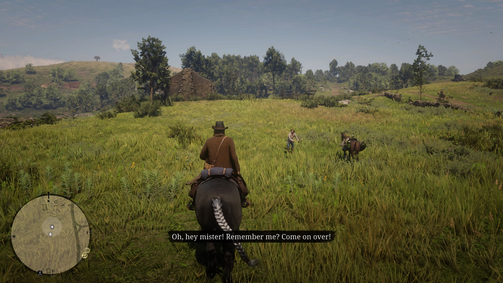
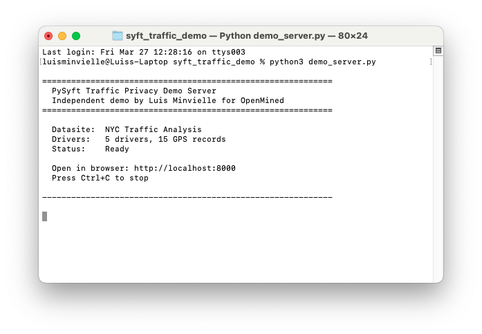
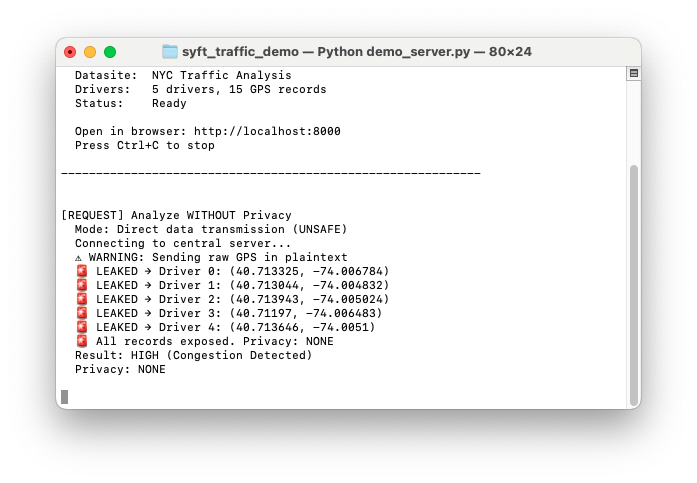
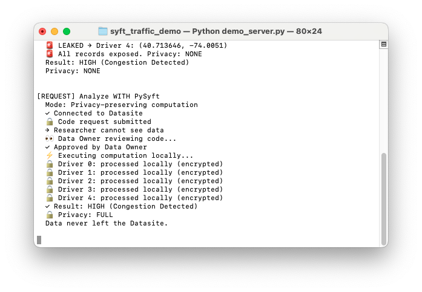
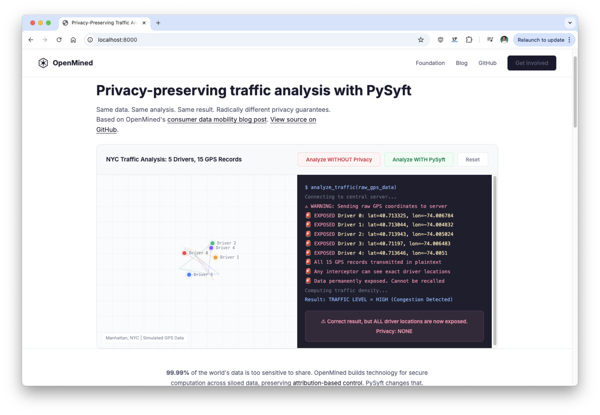

I built a technical tutorial this week and realized something about visual content that every content lead should know about.
Everything in content right now seems accelerated. With agents, it looks like we can do absolutely everything. And many times the claim is that this speed comes at the expense of the quality that started organically. There's evidence for this. Google's March 2024 core update deindexed over 800 websites that had scaled up AI-generated content. One site had published 60,000 articles in six months. That's spam.
But there is a use case where you can do something with speed, well-made and with speed (a very different thing). Something that is useful for most users. That looks good on most devices. That LLMs can read. That people can read too.
That use case is generating images and visual content for blogs that renders in the browser.
I know this sounds contradictory. I'm going to get into what I found out while making a technical tutorial this week, and why it can help all content leads. Including the content team at Anthropic.
When I played Red Dead Redemption 2, Rockstar had designed the map so that elements render in specific places. That's what creates persistence. You ride through a valley and the trees, the rocks, the light are all there because someone placed them and the engine renders them exactly where they should be. That persistence is incredibly hard to achieve with generative AI.

When I use Nano Banana Pro (which I love), I sometimes run into this: the other day I had an existing photo and asked it to change a few details. It did a great job with most of it. It extended the background, made the image wider, all good. But along the way it completely changed a book cover. The book used to say "The Red Book." Look at what it says now:
This is a generative AI problem. Generative AI has serious trouble with persistence. Renders handle persistence well. When you drew Iron Man in Illustrator, you could export it to any size you wanted. Same when you made a company logo. In Photoshop, the image was rasterized and you lost scalability. The text, at least, always said what it was supposed to say.
That's the tradeoff we've been living with in the 2020s. This is a contemporary paradigm. You either render (the way we've been used to all these years playing Red Dead Redemption 2 or fighting our way into Adobe Illustrator) or you generate (what you can do with, let's say, Nano Banana Pro). One gives you control. The other gives you speed. Pick one.
With Claude Code, you can actually generate code that will render. That breaks the paradigm.
I realized this while building an interactive demo with Claude Code (a privacy-preserving traffic analysis tutorial using PySyft, FastAPI, and Server-Sent Events). Claude Code wrote SVG diagrams, architecture charts, animated comparisons, all as code. The browser renders them. They look like someone designed them in Illustrator, but they were generated in seconds from a text prompt.
The text in these images is written with actual typefaces. Real characters, drawn by the browser's font engine. The letters say what they're supposed to say, and they say it persistently.
Content leads (and I consider myself one) should realize that it's now very practical to generate SVGs, give them a style that closely matches the blog's look, and then choose how to serve them. You can export them rasterized as PNG for traditional CMS setups. Or, if the CMS is ready for it, you can insert SVGs directly and get a little bit of interactivity for free.
We're generating images that load with plain HTML in any reader's browser. That's a spectacular benefit and people should take it into account.
I built an interactive privacy tutorial using PySyft, FastAPI, and Claude Code. The browser shows differential privacy in action. The terminal shows raw computation. They're connected in real time through Server-Sent Events. Every diagram, every chart, every architecture illustration in that demo was generated as SVG code.




You can see it live here: luisminvielle.github.io/pysyft-traffic-privacy-demo